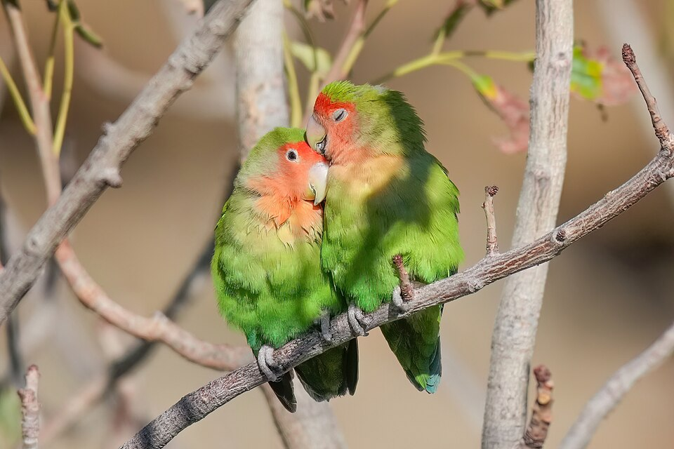
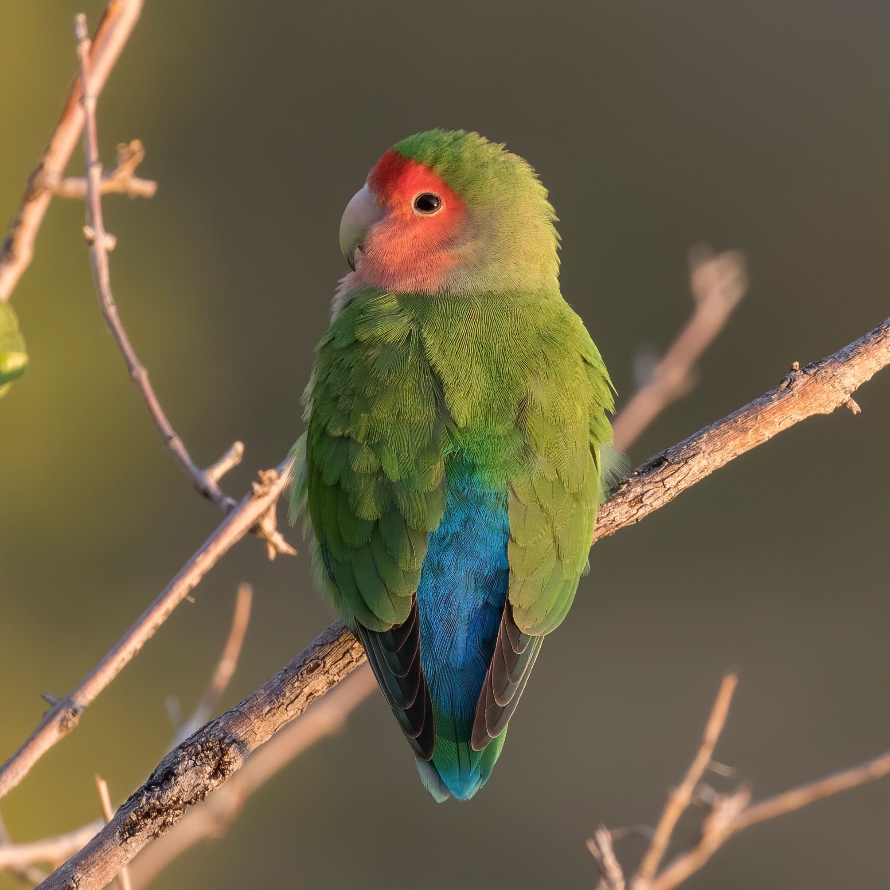

| Student Name: | Sierra |
| School Name: | Devon Christian School |
| Class: | Computers |

Did you know that these birds are considered invasive species in some parts of the U.S?
The Rosy-Faced Lovebirds were introduced as escaped or intentionally released pets from the pet trade. The most well-known introduced population is in Phoenix, Arizona, where they have established a large, growing and untamed colony since at least the mid-1980s. This region’s climate is similar to that of their native land in southern Africa, which helps these birds survive and breed.
Many invasive species, such as the Rosy-Faced lovebirds transmit diseases that can alter the biodiversity among habitats. Although they are not a huge threat, they still cause competition with domestic birds for nesting settlements, the spread of diseases and relying on human resources such as conditioning vents to survive the extreme heat. But they are not entirely considereed ahuge threat to both their native African land and non-native environment, such as Pheonix Arizona.

Both the male and feamle birds are similar in apperance with both having a bright green body, a salmon pink face and throat, a bright blue patch at the base of its *rump and lower back. They both measure 15 to 18cm in length. However, the females are slightly larger, weighing around 43 to 63 grams. The extra size, weight and structure for the females, is needed to perform egg production.